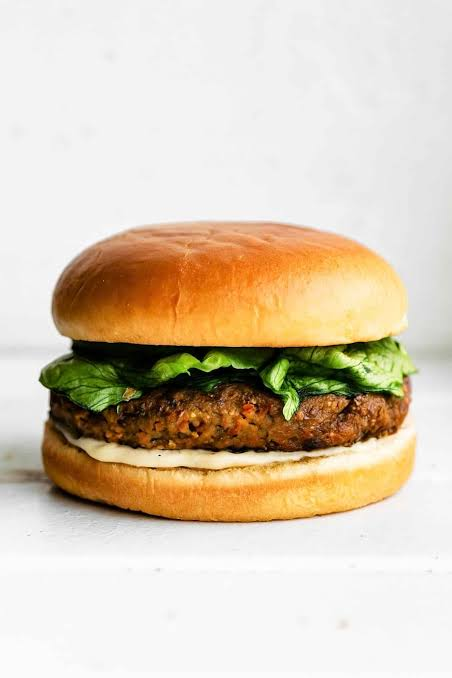

© noogurt 2026

These were actually the very first veggie burgers I created way back in 2009 — and I still make them to this day! They’ve stood the test of time for a reason. I love how customizable they are. Whether you’re switching up the beans, adding different spices, or tossing in whatever veggies you have on hand, they’re easy to make your own. They’re also packed with protein and fiber, and naturally gluten-free. So if you’re looking for a go-to veggie burger recipe, keep this one in your back pocket. And don’t worry — I’m sharing all my favorite tips below to help you make them just right!